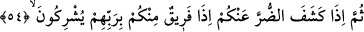

52. Göklerde ve yerde ne varsa, O’nundur, din de yalnız O’nundur. O halde
Allah’tan başkasından mı korkuyorsunuz?
“Göklerde”ki meleklerden “ve yerde”ki insanlardan ve cinlerden “ne varsa,
O’nundur” yaratma ve mülk bakımından O’na âiddir.
“Din de” göklerde, yerde ve bu ikisi arasındaki her şeyin tâati ve boyun eğmesi de
zorunlu, sâbit ve devamlı olarak “yalnız O’nundur.” Çünkü kendisinden korkmak
vâcib/zorunlu olan ilah sâdece O’dur.
“O halde Allah’tan başkasından mı korkuyorsunuz?” Yâni zikredilen tevhîdi, her
şeyin yaratıcısı ve mâlikinin Allah olduğunu bildikten sonra O’ndan başkasına mı itâat
ediyor ve korkuyorsunuz?
53. Nîmet olarak size ulaşan ne varsa, Allah’tandır. Sonra size bir zarar
dokunduğu zaman da yalnız O’na yalvarırsınız.
“Nîmet olarak size ulaşan ne varsa, Allah’tandır.” Yâni, sizin elinizin altında,
berâberinizde ve size nisbet edilen zenginlik, sıhhat, bolluk ve benzeri hangi tür nîmet
olursa olsun bütün nîmetler Allah tarafındandır. Nîmetin onların ellerinde olması,
nîmetin Allah Teâlâ tarafından meydana getirildiğini değil O’ndan olduğunu haber
vermek için bir sebebdir. “Sonra size bir zarar” yâni fakirlik, hastalık, kuraklık ve
benzeri az da olsa “dokunduğu zaman da” o musibetin ortadan kalkması için başkasına
değil “yalnız O’na yalvarırsınız.” tazarru ve niyaz edersiniz. “
”, duâ ederken ve
yardım isterken sesi yükseltmektir.
54. Sonra da sizden o zararı giderdiğinde, içinizden bir zümre, hemen Rablerine
ortak koşarlar!
“Sonra da sizden o zararı giderdiğinde, içinizden bir zümre,” sizden kâfir olanlar
“hemen Rablerine ortak koşarlar!”